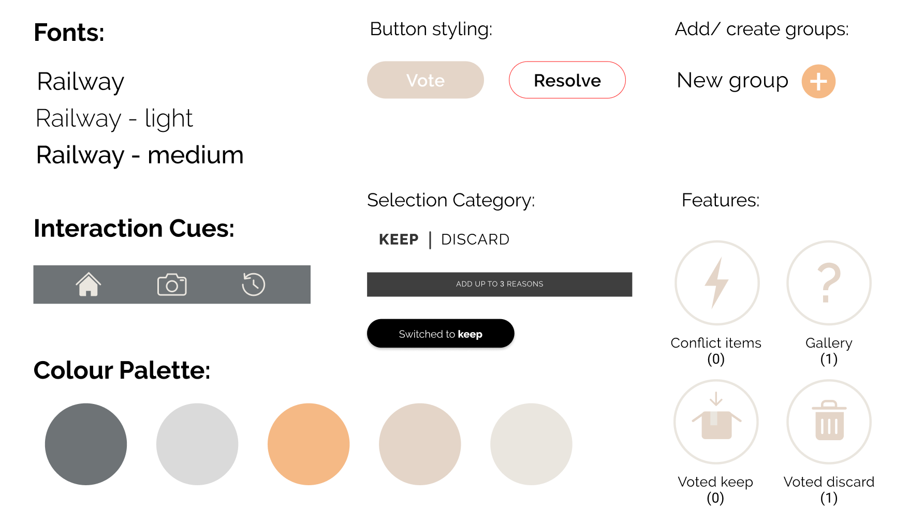

Overview
Lighten your load. It’s not enough to keep just anything. It’s what you decide to keep that makes them worthwhile.
roles
Interaction Design, Visual Design, UX Research, Wireframing, Prototyping
team
Jiayu Liu, Kristina Gorobets, Lucio Chen, Patricia Ciocan
duration
October – November 2019
tools
Figma
Pak n’go is an application that helps users in the process of packing during a move, whether it’s moving locally or abroad. Offering better interaction through a voting system to help packers justify their kept items, our app proposal aims to support groups of 2 or more to apply reasoning of why the items will uphold their envisioned lifestyle.
This project was completed over 4 weeks for a senior level interaction design class. The goal of the project was to research and design an interactive system for a specific domain and context.
Problem Space
Moving can be a stressful and complicated process, whether it’s moving locally or abroad. The process of organizing and packing items to go or minimizing to decrease the load can be time consuming and elusive. With the initial domain of eco-minimalist, we focused on the concept of reducing the load to help stay organized while sorting each of the items into keep and discard.
As a quick competitive analysis we looked into existing apps however there were not many apps that supported moving directly but more for keeping a checklist or separating each of the items under a group to remember what items are kept in which box.
Research
As the initial research, we conducted interviews with 11 stakeholders between 21-67(6 female, 5 male) who had previous experience in moving.
From our research, we were able to identify key factors that allowed us to better understand how we can develop a better experience of a moving process for people.
Insights
Reasons to moving:
• Pursuing work or education opportunities
• Out of necessity such as for financial stability
• Market opportunity to attain a long-term goal of a dream home
• Following family or for new experiences
Painpoints:
• Difficulty of knowing what items to keep close and what to pack up
• Tracking personal belongings and other shared items
• Knowing when to start packing, resulting in closing off access
• Knowing what baggage to pack up when alone
• Communicating with others involved in the move
Stakeholders
We defined our stakeholders based on the collected insights and research strategy.
01
Individuals: (Early consideration) How many young people move abroad alone and need a way to organize and track their belongings.
02
Duo/Couples: Many stakeholders nowadays move with roommates or their life partner and require a form of easy communication and decision making for their shared items.
03
Groups: When moving out with multiple individuals, packing and tracking can become difficult and require careful planning along with decision making considering everyone's say.
A persona was developed based off our collected insights and research:

Persona developed based on the key insights
Solution
The concept of the app is to help movers organize and sift through items they require to keep and discard before moving into their new homes. For couples and groups moving in together, we wanted to help them decide on the items they need and what items could be left behind.
We developed a basic user flow to help structure the app before designing the visuals and sketching wireframes to identify and understand the application as a whole. Then we each split off and created the different structures before coming together as a whole. I was tasked to create the onboarding pages and the main camera feature. I tried to keep the pages easy to understand and instinctual to avoid any confusion.

User flow chart
Deliverable
Visual design:
We decided to use neutral tones to keep the application clean and highlight interactive features with a brighter colour to help stand out. Furthermore, we believed using minimal amount of colour with white space helps components stand out more and bring balance to the overall design.
Application style guide
Design Iterations

Initial Wireframes of the application features
Initially we created a set of wireframes to quickly visualize the interactions and workflows. Then we developed each of the features and focused on how we could design the layouts without overwhelming the users with text on each of the display. I worked on developing the camera feature along with the gallery space to display the items. I focused on keeping the layout familiar by referencing the smartphone camera display and incorporate the settings for the keep and discard feature.

Some of the screens I worked on and contributed on. Iterations of main features: Camera, Voting, Gallery
User Test
Before moving onto our final design, we conducted user testing with 10 stakeholders to gather insights and feedback on the core workflow of our application. We observed the users to visualize how they react and work through the application. Additionally, we interviewed the users to hear any concerns or thoughts on how we could better their experience with our designs.
01
Irrelevant Feature:
Users felt the onboarding was too long and some of the information was not as important. Users wanted to get into the app quicker. The initial feature of boxing items after capturing them seemed unnecessary as it could be don’t physically.
02
Confusing Feature:
The group creation feature was confusing mixed in with the individual options.
03
Non-instinctual:
With unclear labelling, users did not know what the buttons were meant to do and it confused the overall workflow. Furthermore, the customized camera settings were not clear enough to guide the users losing the instinctual flow.
To begin simplifying our application we narrowed the onboarding process, removed the individual usage option (directing the app to 2+ group usage only) and focused solely on the item selection feature.
Feature Details
Final Overview
Pak n’go is an application that supports groups of 2+ in the process of packing during a move, whether it’s moving locally or abroad. With a simple voting system to help justify the reasons why certain items will uphold the user’s envisioned lifestyle.
Group Creation:
The initial step allows users to create groups to organize who they wish to start packing with for a moving session.
Creating a group to get started
Camera Feature:
Whether the user decides to keep or discard the item, the camera feature allows users custom setting to easily organize the items for packing.

Taking a photo with keep setting; the discard feature works the same with Discard highlighted
Gallery Space:
The gallery space allows users to view any previous items they have added including items added by the group members. Each image also specifies details to the votes and reasons why the items should be kept or discarded.

Gallery space to view items that have been added to the group
Voting:
With a swipe gesture, users can make decisions simultaneously with their group members and view any conflicting decisions.

Making decisions on items to keep or discard
Link to final website
Conclusion
Reflection
From this project, I was able to learn the process of creating an application from scratch and how important it is to conduct user research and user testing. These steps helped the team understand how the user understands the workflow of the app and how we as designers can help resolve the users’ frustrations and create a positive experience. I am proud of the result as we struggled to land a specific domain without getting lost in the topics that have already been overdeveloped.
In addition, if I had the opportunity, I would like to implement an additional element to the app. A feature to help connect the users for donation or recyclable items and providing opportunities to reduce waste and find options to provide home appliances and used items a new home. For example, upgrading the camera feature to allow scanning the items to see how the items can be recycled or reused.